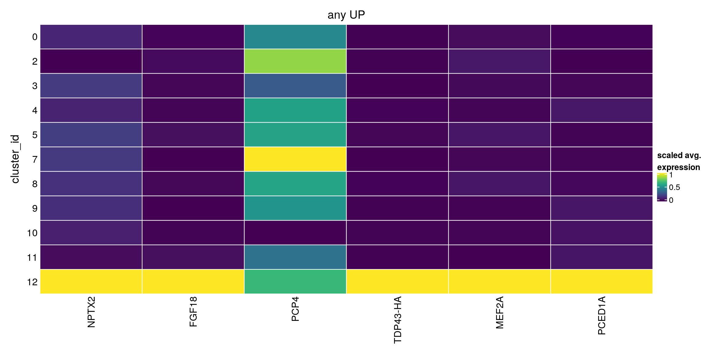
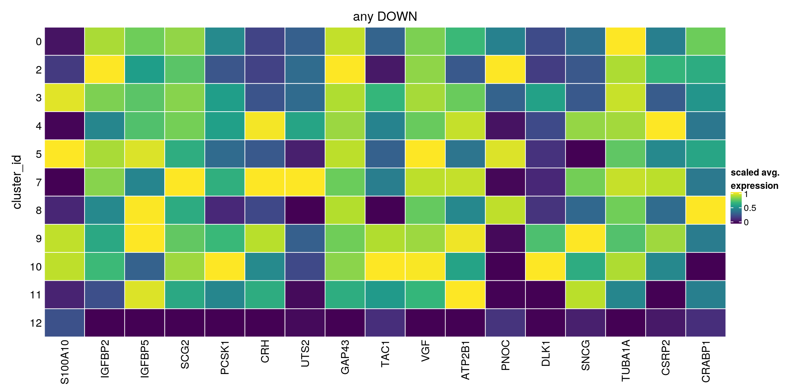
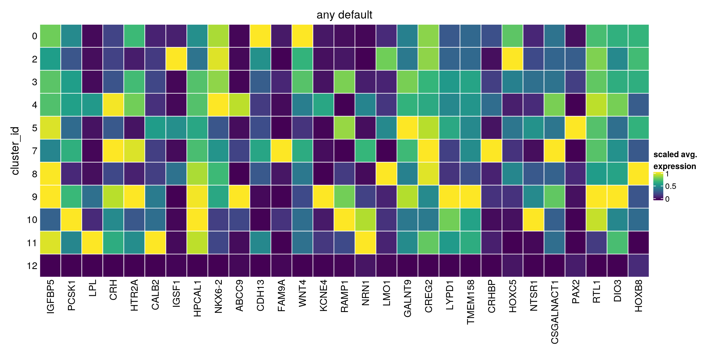
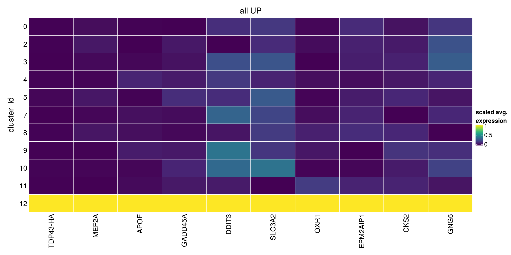
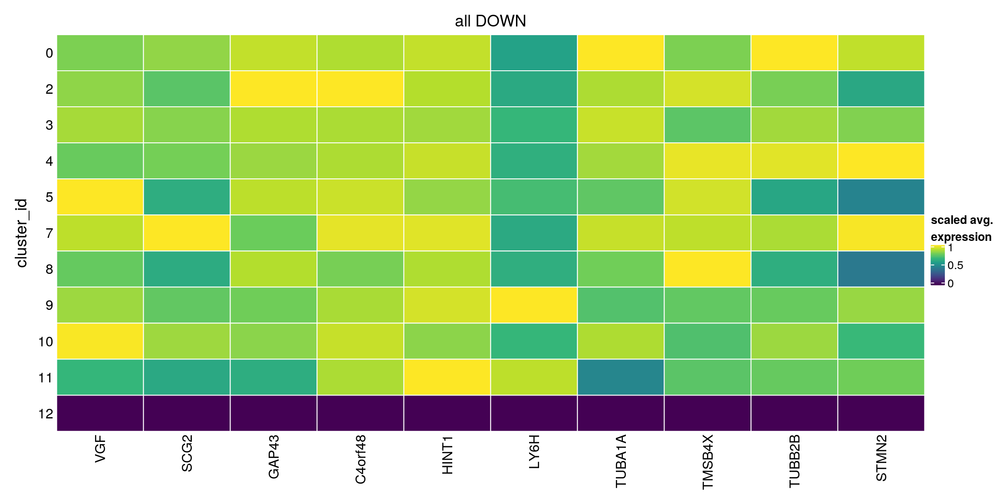
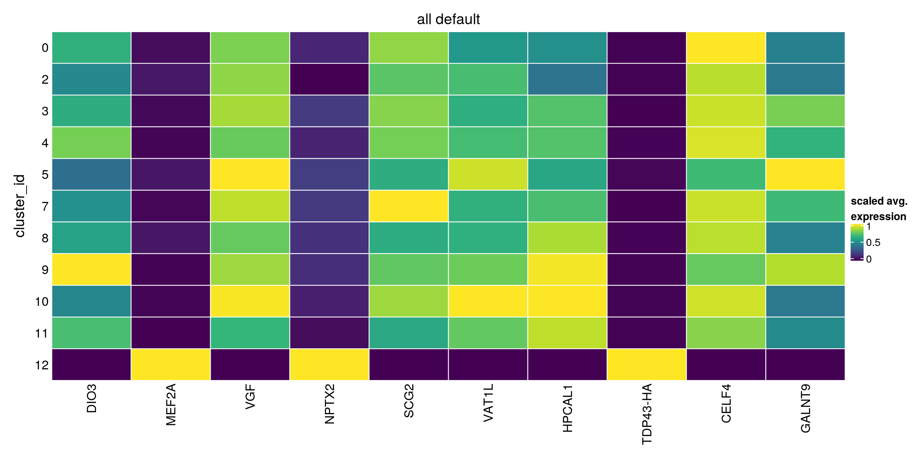

Last updated: 2020-11-19
Checks: 7 0
Knit directory: neural_scRNAseq/
This reproducible R Markdown analysis was created with workflowr (version 1.6.2). The Checks tab describes the reproducibility checks that were applied when the results were created. The Past versions tab lists the development history.
Great! Since the R Markdown file has been committed to the Git repository, you know the exact version of the code that produced these results.
Great job! The global environment was empty. Objects defined in the global environment can affect the analysis in your R Markdown file in unknown ways. For reproduciblity it's best to always run the code in an empty environment.
The command set.seed(20200522) was run prior to running the code in the R Markdown file. Setting a seed ensures that any results that rely on randomness, e.g. subsampling or permutations, are reproducible.
Great job! Recording the operating system, R version, and package versions is critical for reproducibility.
Nice! There were no cached chunks for this analysis, so you can be confident that you successfully produced the results during this run.
Great job! Using relative paths to the files within your workflowr project makes it easier to run your code on other machines.
Great! You are using Git for version control. Tracking code development and connecting the code version to the results is critical for reproducibility.
The results in this page were generated with repository version 21d8e8c. See the Past versions tab to see a history of the changes made to the R Markdown and HTML files.
Note that you need to be careful to ensure that all relevant files for the analysis have been committed to Git prior to generating the results (you can use wflow_publish or wflow_git_commit). workflowr only checks the R Markdown file, but you know if there are other scripts or data files that it depends on. Below is the status of the Git repository when the results were generated:
Ignored files:
Ignored: .DS_Store
Ignored: .Rhistory
Ignored: .Rproj.user/
Ignored: ._.DS_Store
Ignored: ._Rplots.pdf
Ignored: .__workflowr.yml
Ignored: ._neural_scRNAseq.Rproj
Ignored: analysis/.DS_Store
Ignored: analysis/.Rhistory
Ignored: analysis/._.DS_Store
Ignored: analysis/._01-preprocessing.Rmd
Ignored: analysis/._01-preprocessing.html
Ignored: analysis/._02.1-SampleQC.Rmd
Ignored: analysis/._03-filtering.Rmd
Ignored: analysis/._04-clustering.Rmd
Ignored: analysis/._04-clustering.knit.md
Ignored: analysis/._04.1-cell_cycle.Rmd
Ignored: analysis/._05-annotation.Rmd
Ignored: analysis/._Lam-0-NSC_no_integration.Rmd
Ignored: analysis/._Lam-01-NSC_integration.Rmd
Ignored: analysis/._Lam-02-NSC_annotation.Rmd
Ignored: analysis/._NSC-1-clustering.Rmd
Ignored: analysis/._NSC-2-annotation.Rmd
Ignored: analysis/.__site.yml
Ignored: analysis/._additional_filtering.Rmd
Ignored: analysis/._additional_filtering_clustering.Rmd
Ignored: analysis/._index.Rmd
Ignored: analysis/._organoid-01-1-qualtiy-control.Rmd
Ignored: analysis/._organoid-01-clustering.Rmd
Ignored: analysis/._organoid-02-integration.Rmd
Ignored: analysis/._organoid-03-cluster_analysis.Rmd
Ignored: analysis/._organoid-04-group_integration.Rmd
Ignored: analysis/._organoid-04-stage_integration.Rmd
Ignored: analysis/._organoid-05-group_integration_cluster_analysis.Rmd
Ignored: analysis/._organoid-05-stage_integration_cluster_analysis.Rmd
Ignored: analysis/._organoid-06-1-prepare-sce.Rmd
Ignored: analysis/._organoid-06-conos-analysis-Seurat.Rmd
Ignored: analysis/._organoid-06-conos-analysis-function.Rmd
Ignored: analysis/._organoid-06-conos-analysis.Rmd
Ignored: analysis/._organoid-06-group-integration-conos-analysis.Rmd
Ignored: analysis/._organoid-07-conos-visualization.Rmd
Ignored: analysis/._organoid-07-group-integration-conos-visualization.Rmd
Ignored: analysis/._organoid-08-conos-comparison.Rmd
Ignored: analysis/._organoid-0x-sample_integration.Rmd
Ignored: analysis/01-preprocessing_cache/
Ignored: analysis/02-1-SampleQC_cache/
Ignored: analysis/02-quality_control_cache/
Ignored: analysis/02.1-SampleQC_cache/
Ignored: analysis/03-filtering_cache/
Ignored: analysis/04-clustering_cache/
Ignored: analysis/04.1-cell_cycle_cache/
Ignored: analysis/05-annotation_cache/
Ignored: analysis/06-clustering-all-timepoints_cache/
Ignored: analysis/07-cluster-analysis-all-timepoints_cache/
Ignored: analysis/Lam-01-NSC_integration_cache/
Ignored: analysis/Lam-02-NSC_annotation_cache/
Ignored: analysis/NSC-1-clustering_cache/
Ignored: analysis/NSC-2-annotation_cache/
Ignored: analysis/TDP-01-preprocessing_cache/
Ignored: analysis/TDP-02-quality_control_cache/
Ignored: analysis/TDP-03-filtering_cache/
Ignored: analysis/TDP-04-clustering_cache/
Ignored: analysis/TDP-05-00-filtering-plasmid-QC_cache/
Ignored: analysis/TDP-05-plasmid_expression_cache/
Ignored: analysis/TDP-06-cluster_analysis_cache/
Ignored: analysis/additional_filtering_cache/
Ignored: analysis/additional_filtering_clustering_cache/
Ignored: analysis/organoid-01-1-qualtiy-control_cache/
Ignored: analysis/organoid-01-clustering_cache/
Ignored: analysis/organoid-02-integration_cache/
Ignored: analysis/organoid-03-cluster_analysis_cache/
Ignored: analysis/organoid-04-group_integration_cache/
Ignored: analysis/organoid-04-stage_integration_cache/
Ignored: analysis/organoid-05-group_integration_cluster_analysis_cache/
Ignored: analysis/organoid-05-stage_integration_cluster_analysis_cache/
Ignored: analysis/organoid-06-conos-analysis_cache/
Ignored: analysis/organoid-06-conos-analysis_test_cache/
Ignored: analysis/organoid-06-group-integration-conos-analysis_cache/
Ignored: analysis/organoid-07-conos-visualization_cache/
Ignored: analysis/organoid-07-group-integration-conos-visualization_cache/
Ignored: analysis/organoid-08-conos-comparison_cache/
Ignored: analysis/organoid-0x-sample_integration_cache/
Ignored: analysis/sample5_QC_cache/
Ignored: analysis/timepoints-01-organoid-integration_cache/
Ignored: data/.DS_Store
Ignored: data/._.DS_Store
Ignored: data/._.smbdeleteAAA17ed8b4b
Ignored: data/._Lam_figure2_markers.R
Ignored: data/._Reactive_astrocytes_markers.xlsx
Ignored: data/._known_NSC_markers.R
Ignored: data/._known_cell_type_markers.R
Ignored: data/._metadata.csv
Ignored: data/._reactive_astrocyte_markers.R
Ignored: data/._~$Reactive_astrocytes_markers.xlsx
Ignored: data/data_sushi/
Ignored: data/filtered_feature_matrices/
Ignored: output/.DS_Store
Ignored: output/._.DS_Store
Ignored: output/._NSC_cluster2_marker_genes.txt
Ignored: output/._TDP-06-no_integration_cluster12_marker_genes.txt
Ignored: output/._TDP-06-no_integration_cluster13_marker_genes.txt
Ignored: output/._organoid_integration_cluster1_marker_genes.txt
Ignored: output/Lam-01-clustering.rds
Ignored: output/NSC_1_clustering.rds
Ignored: output/NSC_cluster1_marker_genes.txt
Ignored: output/NSC_cluster2_marker_genes.txt
Ignored: output/NSC_cluster3_marker_genes.txt
Ignored: output/NSC_cluster4_marker_genes.txt
Ignored: output/NSC_cluster5_marker_genes.txt
Ignored: output/NSC_cluster6_marker_genes.txt
Ignored: output/NSC_cluster7_marker_genes.txt
Ignored: output/TDP-06-no_integration_cluster0_marker_genes.txt
Ignored: output/TDP-06-no_integration_cluster10_marker_genes.txt
Ignored: output/TDP-06-no_integration_cluster11_marker_genes.txt
Ignored: output/TDP-06-no_integration_cluster12_marker_genes.txt
Ignored: output/TDP-06-no_integration_cluster13_marker_genes.txt
Ignored: output/TDP-06-no_integration_cluster14_marker_genes.txt
Ignored: output/TDP-06-no_integration_cluster15_marker_genes.txt
Ignored: output/TDP-06-no_integration_cluster16_marker_genes.txt
Ignored: output/TDP-06-no_integration_cluster17_marker_genes.txt
Ignored: output/TDP-06-no_integration_cluster1_marker_genes.txt
Ignored: output/TDP-06-no_integration_cluster2_marker_genes.txt
Ignored: output/TDP-06-no_integration_cluster3_marker_genes.txt
Ignored: output/TDP-06-no_integration_cluster4_marker_genes.txt
Ignored: output/TDP-06-no_integration_cluster5_marker_genes.txt
Ignored: output/TDP-06-no_integration_cluster6_marker_genes.txt
Ignored: output/TDP-06-no_integration_cluster7_marker_genes.txt
Ignored: output/TDP-06-no_integration_cluster8_marker_genes.txt
Ignored: output/TDP-06-no_integration_cluster9_marker_genes.txt
Ignored: output/TDP-06_scran_markers.rds
Ignored: output/additional_filtering.rds
Ignored: output/conos/
Ignored: output/conos_organoid-06-conos-analysis.rds
Ignored: output/conos_organoid-06-group-integration-conos-analysis.rds
Ignored: output/figures/
Ignored: output/organoid_integration_cluster10_marker_genes.txt
Ignored: output/organoid_integration_cluster11_marker_genes.txt
Ignored: output/organoid_integration_cluster12_marker_genes.txt
Ignored: output/organoid_integration_cluster13_marker_genes.txt
Ignored: output/organoid_integration_cluster14_marker_genes.txt
Ignored: output/organoid_integration_cluster15_marker_genes.txt
Ignored: output/organoid_integration_cluster16_marker_genes.txt
Ignored: output/organoid_integration_cluster17_marker_genes.txt
Ignored: output/organoid_integration_cluster1_marker_genes.txt
Ignored: output/organoid_integration_cluster2_marker_genes.txt
Ignored: output/organoid_integration_cluster3_marker_genes.txt
Ignored: output/organoid_integration_cluster4_marker_genes.txt
Ignored: output/organoid_integration_cluster5_marker_genes.txt
Ignored: output/organoid_integration_cluster6_marker_genes.txt
Ignored: output/organoid_integration_cluster7_marker_genes.txt
Ignored: output/organoid_integration_cluster8_marker_genes.txt
Ignored: output/organoid_integration_cluster9_marker_genes.txt
Ignored: output/sce_01_preprocessing.rds
Ignored: output/sce_02_quality_control.rds
Ignored: output/sce_03_filtering.rds
Ignored: output/sce_03_filtering_all_genes.rds
Ignored: output/sce_06-1-prepare-sce.rds
Ignored: output/sce_TDP_01_preprocessing.rds
Ignored: output/sce_TDP_02_quality_control.rds
Ignored: output/sce_TDP_03_filtering.rds
Ignored: output/sce_TDP_03_filtering_all_genes.rds
Ignored: output/sce_organoid-01-clustering.rds
Ignored: output/sce_preprocessing.rds
Ignored: output/so_04-group_integration.rds
Ignored: output/so_04-stage_integration.rds
Ignored: output/so_04_1_cell_cycle.rds
Ignored: output/so_04_clustering.rds
Ignored: output/so_06-clustering_all_timepoints.rds
Ignored: output/so_0x-sample_integration.rds
Ignored: output/so_TDP-06-cluster-analysis.rds
Ignored: output/so_TDP_04_clustering.rds
Ignored: output/so_TDP_05_plasmid_expression.rds
Ignored: output/so_additional_filtering_clustering.rds
Ignored: output/so_integrated_organoid-02-integration.rds
Ignored: output/so_merged_organoid-02-integration.rds
Ignored: output/so_organoid-01-clustering.rds
Ignored: output/so_sample_organoid-01-clustering.rds
Ignored: scripts/._bu_Rcode.R
Ignored: scripts/._plasmid_expression.sh
Ignored: scripts/._prepare_salmon_transcripts.R
Untracked files:
Untracked: Rplots.pdf
Untracked: analysis/Lam-0-NSC_no_integration.Rmd
Untracked: analysis/additional_filtering.Rmd
Untracked: analysis/additional_filtering_clustering.Rmd
Untracked: analysis/organoid-01-1-qualtiy-control.Rmd
Untracked: analysis/organoid-06-conos-analysis-Seurat.Rmd
Untracked: analysis/organoid-06-conos-analysis-function.Rmd
Untracked: analysis/organoid-07-conos-visualization.Rmd
Untracked: analysis/organoid-07-group-integration-conos-visualization.Rmd
Untracked: analysis/organoid-08-conos-comparison.Rmd
Untracked: analysis/organoid-0x-sample_integration.Rmd
Untracked: analysis/sample5_QC.Rmd
Untracked: data/Homo_sapiens.GRCh38.98.sorted.gtf
Untracked: data/Kanton_et_al/
Untracked: data/Lam_et_al/
Untracked: data/Sep2020/
Untracked: data/reference/
Untracked: data/~$Reactive_astrocytes_markers.xlsx
Untracked: scripts/bu_Rcode.R
Untracked: scripts/salmon-latest_linux_x86_64/
Unstaged changes:
Modified: analysis/05-annotation.Rmd
Modified: analysis/Lam-02-NSC_annotation.Rmd
Modified: analysis/TDP-04-clustering.Rmd
Modified: analysis/_site.yml
Modified: analysis/organoid-02-integration.Rmd
Modified: analysis/organoid-04-group_integration.Rmd
Modified: analysis/organoid-06-conos-analysis.Rmd
Modified: analysis/timepoints-01-organoid-integration.Rmd
Note that any generated files, e.g. HTML, png, CSS, etc., are not included in this status report because it is ok for generated content to have uncommitted changes.
These are the previous versions of the repository in which changes were made to the R Markdown (analysis/TDP-07-cluster_12.Rmd) and HTML (docs/TDP-07-cluster_12.html) files. If you've configured a remote Git repository (see ?wflow_git_remote), click on the hyperlinks in the table below to view the files as they were in that past version.
| File | Version | Author | Date | Message |
|---|---|---|---|---|
| Rmd | 21d8e8c | khembach | 2020-11-19 | find markers for cluster 12 |
library(ComplexHeatmap)
library(cowplot)
library(ggplot2)
library(dplyr)
library(muscat)
library(purrr)
library(RColorBrewer)
library(viridis)
library(scran)
library(Seurat)
library(SingleCellExperiment)
library(stringr)
library(RCurl)
library(BiocParallel)so <- readRDS(file.path("output", "so_TDP-06-cluster-analysis.rds"))
sce <- as.SingleCellExperiment(so, assay = "RNA")
colData(sce) <- as.data.frame(colData(sce)) %>%
mutate_if(is.character, as.factor) %>%
DataFrame(row.names = colnames(sce))
so <- SetIdent(so, value = "RNA_snn_res.0.4")
so@meta.data$cluster_id <- Idents(so)
sce$cluster_id <- Idents(so)We want to find markers that are specific for cluster 12 (TDP-HA positive cells). We are interested in markers that separate cluster 12 from ALL other clusters or only a subset of clusters. Additionally, we compare cluster 12 to only the neuronal clusters.
We identify candidate marker genes for each cluster that enable a separation of that group from any other group. The null hypothesis is that the log FC between a cluster and the compared cluster is 2.
We first subset the data to the neuronal clusters.
neuronal_clusters <- c(0, 2:5, 7:11, 12)
sce_sub <- sce[,sce$cluster_id %in% neuronal_clusters]
dim(sce)[1] 13970 30870dim(sce_sub)[1] 13970 24123## marker for any other cluster
## UP
any_up <- findMarkers(sce_sub, groups = sce_sub$cluster_id,
block = sce_sub$sample_id, direction = "up",
lfc = 2, pval.type="any")Warning in FUN(...): no within-block comparison between 1 and 0Warning in FUN(...): no within-block comparison between 2 and 1Warning in FUN(...): no within-block comparison between 3 and 1Warning in FUN(...): no within-block comparison between 4 and 1Warning in FUN(...): no within-block comparison between 5 and 1Warning in FUN(...): no within-block comparison between 6 and 0Warning in FUN(...): no within-block comparison between 6 and 1Warning in FUN(...): no within-block comparison between 6 and 2Warning in FUN(...): no within-block comparison between 6 and 3Warning in FUN(...): no within-block comparison between 6 and 4Warning in FUN(...): no within-block comparison between 6 and 5Warning in FUN(...): no within-block comparison between 7 and 1Warning in FUN(...): no within-block comparison between 7 and 6Warning in FUN(...): no within-block comparison between 8 and 1Warning in FUN(...): no within-block comparison between 8 and 6Warning in FUN(...): no within-block comparison between 9 and 1Warning in FUN(...): no within-block comparison between 9 and 6Warning in FUN(...): no within-block comparison between 10 and 1Warning in FUN(...): no within-block comparison between 10 and 6Warning in FUN(...): no within-block comparison between 11 and 1Warning in FUN(...): no within-block comparison between 11 and 6Warning in FUN(...): no within-block comparison between 12 and 1Warning in FUN(...): no within-block comparison between 12 and 6Warning in FUN(...): no within-block comparison between 13 and 0Warning in FUN(...): no within-block comparison between 13 and 1Warning in FUN(...): no within-block comparison between 13 and 2Warning in FUN(...): no within-block comparison between 13 and 3Warning in FUN(...): no within-block comparison between 13 and 4Warning in FUN(...): no within-block comparison between 13 and 5Warning in FUN(...): no within-block comparison between 13 and 6Warning in FUN(...): no within-block comparison between 13 and 7Warning in FUN(...): no within-block comparison between 13 and 8Warning in FUN(...): no within-block comparison between 13 and 9Warning in FUN(...): no within-block comparison between 13 and 10Warning in FUN(...): no within-block comparison between 13 and 11Warning in FUN(...): no within-block comparison between 13 and 12Warning in FUN(...): no within-block comparison between 14 and 0Warning in FUN(...): no within-block comparison between 14 and 1Warning in FUN(...): no within-block comparison between 14 and 2Warning in FUN(...): no within-block comparison between 14 and 3Warning in FUN(...): no within-block comparison between 14 and 4Warning in FUN(...): no within-block comparison between 14 and 5Warning in FUN(...): no within-block comparison between 14 and 6Warning in FUN(...): no within-block comparison between 14 and 7Warning in FUN(...): no within-block comparison between 14 and 8Warning in FUN(...): no within-block comparison between 14 and 9Warning in FUN(...): no within-block comparison between 14 and 10Warning in FUN(...): no within-block comparison between 14 and 11Warning in FUN(...): no within-block comparison between 14 and 12Warning in FUN(...): no within-block comparison between 14 and 13Warning in FUN(...): no within-block comparison between 15 and 0Warning in FUN(...): no within-block comparison between 15 and 1Warning in FUN(...): no within-block comparison between 15 and 2Warning in FUN(...): no within-block comparison between 15 and 3Warning in FUN(...): no within-block comparison between 15 and 4Warning in FUN(...): no within-block comparison between 15 and 5Warning in FUN(...): no within-block comparison between 15 and 6Warning in FUN(...): no within-block comparison between 15 and 7Warning in FUN(...): no within-block comparison between 15 and 8Warning in FUN(...): no within-block comparison between 15 and 9Warning in FUN(...): no within-block comparison between 15 and 10Warning in FUN(...): no within-block comparison between 15 and 11Warning in FUN(...): no within-block comparison between 15 and 12Warning in FUN(...): no within-block comparison between 15 and 13Warning in FUN(...): no within-block comparison between 15 and 14Warning in FUN(...): no within-block comparison between 16 and 0Warning in FUN(...): no within-block comparison between 16 and 1Warning in FUN(...): no within-block comparison between 16 and 2Warning in FUN(...): no within-block comparison between 16 and 3Warning in FUN(...): no within-block comparison between 16 and 4Warning in FUN(...): no within-block comparison between 16 and 5Warning in FUN(...): no within-block comparison between 16 and 6Warning in FUN(...): no within-block comparison between 16 and 7Warning in FUN(...): no within-block comparison between 16 and 8Warning in FUN(...): no within-block comparison between 16 and 9Warning in FUN(...): no within-block comparison between 16 and 10Warning in FUN(...): no within-block comparison between 16 and 11Warning in FUN(...): no within-block comparison between 16 and 12Warning in FUN(...): no within-block comparison between 16 and 13Warning in FUN(...): no within-block comparison between 16 and 14Warning in FUN(...): no within-block comparison between 16 and 15## top 10 markers
any_up[["12"]][1:10,1:4]DataFrame with 10 rows and 4 columns
Top p.value FDR summary.logFC
<integer> <numeric> <numeric> <numeric>
ENSG00000106236.NPTX2 1 4.28405e-19 5.98482e-15 2.682297
TDP43-HA 1 9.99986e-01 1.00000e+00 1.747798
ENSG00000156427.FGF18 2 1.00000e+00 1.00000e+00 1.854643
ENSG00000068305.MEF2A 2 1.00000e+00 1.00000e+00 1.624630
ENSG00000116717.GADD45A 3 1.00000e+00 1.00000e+00 1.222869
ENSG00000130203.APOE 3 1.00000e+00 1.00000e+00 1.106295
ENSG00000132635.PCED1A 3 1.00000e+00 1.00000e+00 1.377570
ENSG00000183036.PCP4 4 1.00000e+00 1.00000e+00 1.633619
ENSG00000197747.S100A10 5 1.00000e+00 1.00000e+00 0.753217
ENSG00000175197.DDIT3 5 1.00000e+00 1.00000e+00 1.075995## DOWN
any_down <- findMarkers(sce_sub, groups = sce_sub$cluster_id,
block = sce_sub$sample_id, direction = "down",
lfc = 2, pval.type="any")Warning in FUN(...): no within-block comparison between 1 and 0Warning in FUN(...): no within-block comparison between 2 and 1Warning in FUN(...): no within-block comparison between 3 and 1Warning in FUN(...): no within-block comparison between 4 and 1Warning in FUN(...): no within-block comparison between 5 and 1Warning in FUN(...): no within-block comparison between 6 and 0Warning in FUN(...): no within-block comparison between 6 and 1Warning in FUN(...): no within-block comparison between 6 and 2Warning in FUN(...): no within-block comparison between 6 and 3Warning in FUN(...): no within-block comparison between 6 and 4Warning in FUN(...): no within-block comparison between 6 and 5Warning in FUN(...): no within-block comparison between 7 and 1Warning in FUN(...): no within-block comparison between 7 and 6Warning in FUN(...): no within-block comparison between 8 and 1Warning in FUN(...): no within-block comparison between 8 and 6Warning in FUN(...): no within-block comparison between 9 and 1Warning in FUN(...): no within-block comparison between 9 and 6Warning in FUN(...): no within-block comparison between 10 and 1Warning in FUN(...): no within-block comparison between 10 and 6Warning in FUN(...): no within-block comparison between 11 and 1Warning in FUN(...): no within-block comparison between 11 and 6Warning in FUN(...): no within-block comparison between 12 and 1Warning in FUN(...): no within-block comparison between 12 and 6Warning in FUN(...): no within-block comparison between 13 and 0Warning in FUN(...): no within-block comparison between 13 and 1Warning in FUN(...): no within-block comparison between 13 and 2Warning in FUN(...): no within-block comparison between 13 and 3Warning in FUN(...): no within-block comparison between 13 and 4Warning in FUN(...): no within-block comparison between 13 and 5Warning in FUN(...): no within-block comparison between 13 and 6Warning in FUN(...): no within-block comparison between 13 and 7Warning in FUN(...): no within-block comparison between 13 and 8Warning in FUN(...): no within-block comparison between 13 and 9Warning in FUN(...): no within-block comparison between 13 and 10Warning in FUN(...): no within-block comparison between 13 and 11Warning in FUN(...): no within-block comparison between 13 and 12Warning in FUN(...): no within-block comparison between 14 and 0Warning in FUN(...): no within-block comparison between 14 and 1Warning in FUN(...): no within-block comparison between 14 and 2Warning in FUN(...): no within-block comparison between 14 and 3Warning in FUN(...): no within-block comparison between 14 and 4Warning in FUN(...): no within-block comparison between 14 and 5Warning in FUN(...): no within-block comparison between 14 and 6Warning in FUN(...): no within-block comparison between 14 and 7Warning in FUN(...): no within-block comparison between 14 and 8Warning in FUN(...): no within-block comparison between 14 and 9Warning in FUN(...): no within-block comparison between 14 and 10Warning in FUN(...): no within-block comparison between 14 and 11Warning in FUN(...): no within-block comparison between 14 and 12Warning in FUN(...): no within-block comparison between 14 and 13Warning in FUN(...): no within-block comparison between 15 and 0Warning in FUN(...): no within-block comparison between 15 and 1Warning in FUN(...): no within-block comparison between 15 and 2Warning in FUN(...): no within-block comparison between 15 and 3Warning in FUN(...): no within-block comparison between 15 and 4Warning in FUN(...): no within-block comparison between 15 and 5Warning in FUN(...): no within-block comparison between 15 and 6Warning in FUN(...): no within-block comparison between 15 and 7Warning in FUN(...): no within-block comparison between 15 and 8Warning in FUN(...): no within-block comparison between 15 and 9Warning in FUN(...): no within-block comparison between 15 and 10Warning in FUN(...): no within-block comparison between 15 and 11Warning in FUN(...): no within-block comparison between 15 and 12Warning in FUN(...): no within-block comparison between 15 and 13Warning in FUN(...): no within-block comparison between 15 and 14Warning in FUN(...): no within-block comparison between 16 and 0Warning in FUN(...): no within-block comparison between 16 and 1Warning in FUN(...): no within-block comparison between 16 and 2Warning in FUN(...): no within-block comparison between 16 and 3Warning in FUN(...): no within-block comparison between 16 and 4Warning in FUN(...): no within-block comparison between 16 and 5Warning in FUN(...): no within-block comparison between 16 and 6Warning in FUN(...): no within-block comparison between 16 and 7Warning in FUN(...): no within-block comparison between 16 and 8Warning in FUN(...): no within-block comparison between 16 and 9Warning in FUN(...): no within-block comparison between 16 and 10Warning in FUN(...): no within-block comparison between 16 and 11Warning in FUN(...): no within-block comparison between 16 and 12Warning in FUN(...): no within-block comparison between 16 and 13Warning in FUN(...): no within-block comparison between 16 and 14Warning in FUN(...): no within-block comparison between 16 and 15any_down[["12"]][1:10,1:4]DataFrame with 10 rows and 4 columns
Top p.value FDR summary.logFC
<integer> <numeric> <numeric> <numeric>
ENSG00000197747.S100A10 1 3.52044e-05 8.19676e-02 -2.40744
ENSG00000115457.IGFBP2 1 1.00000e+00 1.00000e+00 -1.85186
ENSG00000115461.IGFBP5 1 8.43891e-01 1.00000e+00 -2.05806
ENSG00000171951.SCG2 1 3.57320e-10 9.98353e-07 -2.36260
ENSG00000175426.PCSK1 1 2.23788e-66 1.04211e-62 -2.72369
ENSG00000147571.CRH 1 2.73658e-149 3.82300e-145 -3.38874
ENSG00000049247.UTS2 2 4.09516e-117 2.86047e-113 -3.86898
ENSG00000172020.GAP43 2 1.00000e+00 1.00000e+00 -1.83483
ENSG00000006128.TAC1 2 1.15050e-33 4.01811e-30 -3.20934
ENSG00000128564.VGF 2 9.03152e-03 1.00000e+00 -2.17053## any default parameters
any_default <- findMarkers(sce_sub, groups = sce_sub$cluster_id,
block = sce_sub$sample_id, pval.type="any")Warning in FUN(...): no within-block comparison between 1 and 0Warning in FUN(...): no within-block comparison between 2 and 1Warning in FUN(...): no within-block comparison between 3 and 1Warning in FUN(...): no within-block comparison between 4 and 1Warning in FUN(...): no within-block comparison between 5 and 1Warning in FUN(...): no within-block comparison between 6 and 0Warning in FUN(...): no within-block comparison between 6 and 1Warning in FUN(...): no within-block comparison between 6 and 2Warning in FUN(...): no within-block comparison between 6 and 3Warning in FUN(...): no within-block comparison between 6 and 4Warning in FUN(...): no within-block comparison between 6 and 5Warning in FUN(...): no within-block comparison between 7 and 1Warning in FUN(...): no within-block comparison between 7 and 6Warning in FUN(...): no within-block comparison between 8 and 1Warning in FUN(...): no within-block comparison between 8 and 6Warning in FUN(...): no within-block comparison between 9 and 1Warning in FUN(...): no within-block comparison between 9 and 6Warning in FUN(...): no within-block comparison between 10 and 1Warning in FUN(...): no within-block comparison between 10 and 6Warning in FUN(...): no within-block comparison between 11 and 1Warning in FUN(...): no within-block comparison between 11 and 6Warning in FUN(...): no within-block comparison between 12 and 1Warning in FUN(...): no within-block comparison between 12 and 6Warning in FUN(...): no within-block comparison between 13 and 0Warning in FUN(...): no within-block comparison between 13 and 1Warning in FUN(...): no within-block comparison between 13 and 2Warning in FUN(...): no within-block comparison between 13 and 3Warning in FUN(...): no within-block comparison between 13 and 4Warning in FUN(...): no within-block comparison between 13 and 5Warning in FUN(...): no within-block comparison between 13 and 6Warning in FUN(...): no within-block comparison between 13 and 7Warning in FUN(...): no within-block comparison between 13 and 8Warning in FUN(...): no within-block comparison between 13 and 9Warning in FUN(...): no within-block comparison between 13 and 10Warning in FUN(...): no within-block comparison between 13 and 11Warning in FUN(...): no within-block comparison between 13 and 12Warning in FUN(...): no within-block comparison between 14 and 0Warning in FUN(...): no within-block comparison between 14 and 1Warning in FUN(...): no within-block comparison between 14 and 2Warning in FUN(...): no within-block comparison between 14 and 3Warning in FUN(...): no within-block comparison between 14 and 4Warning in FUN(...): no within-block comparison between 14 and 5Warning in FUN(...): no within-block comparison between 14 and 6Warning in FUN(...): no within-block comparison between 14 and 7Warning in FUN(...): no within-block comparison between 14 and 8Warning in FUN(...): no within-block comparison between 14 and 9Warning in FUN(...): no within-block comparison between 14 and 10Warning in FUN(...): no within-block comparison between 14 and 11Warning in FUN(...): no within-block comparison between 14 and 12Warning in FUN(...): no within-block comparison between 14 and 13Warning in FUN(...): no within-block comparison between 15 and 0Warning in FUN(...): no within-block comparison between 15 and 1Warning in FUN(...): no within-block comparison between 15 and 2Warning in FUN(...): no within-block comparison between 15 and 3Warning in FUN(...): no within-block comparison between 15 and 4Warning in FUN(...): no within-block comparison between 15 and 5Warning in FUN(...): no within-block comparison between 15 and 6Warning in FUN(...): no within-block comparison between 15 and 7Warning in FUN(...): no within-block comparison between 15 and 8Warning in FUN(...): no within-block comparison between 15 and 9Warning in FUN(...): no within-block comparison between 15 and 10Warning in FUN(...): no within-block comparison between 15 and 11Warning in FUN(...): no within-block comparison between 15 and 12Warning in FUN(...): no within-block comparison between 15 and 13Warning in FUN(...): no within-block comparison between 15 and 14Warning in FUN(...): no within-block comparison between 16 and 0Warning in FUN(...): no within-block comparison between 16 and 1Warning in FUN(...): no within-block comparison between 16 and 2Warning in FUN(...): no within-block comparison between 16 and 3Warning in FUN(...): no within-block comparison between 16 and 4Warning in FUN(...): no within-block comparison between 16 and 5Warning in FUN(...): no within-block comparison between 16 and 6Warning in FUN(...): no within-block comparison between 16 and 7Warning in FUN(...): no within-block comparison between 16 and 8Warning in FUN(...): no within-block comparison between 16 and 9Warning in FUN(...): no within-block comparison between 16 and 10Warning in FUN(...): no within-block comparison between 16 and 11Warning in FUN(...): no within-block comparison between 16 and 12Warning in FUN(...): no within-block comparison between 16 and 13Warning in FUN(...): no within-block comparison between 16 and 14Warning in FUN(...): no within-block comparison between 16 and 15any_default[["12"]][1:10,1:4]DataFrame with 10 rows and 4 columns
Top p.value FDR summary.logFC
<integer> <numeric> <numeric> <numeric>
ENSG00000115461.IGFBP5 1 4.11036e-295 9.57030e-292 -2.007404
ENSG00000175426.PCSK1 1 5.33377e-266 7.45128e-263 -2.723690
ENSG00000175445.LPL 1 0.00000e+00 0.00000e+00 -0.544666
ENSG00000147571.CRH 1 0.00000e+00 0.00000e+00 -3.442282
ENSG00000148826.NKX6-2 1 8.88340e-302 2.48202e-298 -0.663731
ENSG00000102468.HTR2A 1 0.00000e+00 0.00000e+00 -0.346255
ENSG00000172137.CALB2 1 3.23111e-250 3.22419e-247 -0.804253
ENSG00000115756.HPCAL1 2 4.76925e-213 2.66505e-210 -1.140708
ENSG00000166407.LMO1 2 9.88023e-205 4.75955e-202 -0.622676
ENSG00000069431.ABCC9 2 4.90206e-294 9.78312e-291 -0.892212## markers for all other clusters
## UP
all_up <- findMarkers(sce_sub, groups = sce_sub$cluster_id,
block = sce_sub$sample_id, direction = "up",
lfc = 2, pval.type="all")Warning in FUN(...): no within-block comparison between 1 and 0Warning in FUN(...): no within-block comparison between 2 and 1Warning in FUN(...): no within-block comparison between 3 and 1Warning in FUN(...): no within-block comparison between 4 and 1Warning in FUN(...): no within-block comparison between 5 and 1Warning in FUN(...): no within-block comparison between 6 and 0Warning in FUN(...): no within-block comparison between 6 and 1Warning in FUN(...): no within-block comparison between 6 and 2Warning in FUN(...): no within-block comparison between 6 and 3Warning in FUN(...): no within-block comparison between 6 and 4Warning in FUN(...): no within-block comparison between 6 and 5Warning in FUN(...): no within-block comparison between 7 and 1Warning in FUN(...): no within-block comparison between 7 and 6Warning in FUN(...): no within-block comparison between 8 and 1Warning in FUN(...): no within-block comparison between 8 and 6Warning in FUN(...): no within-block comparison between 9 and 1Warning in FUN(...): no within-block comparison between 9 and 6Warning in FUN(...): no within-block comparison between 10 and 1Warning in FUN(...): no within-block comparison between 10 and 6Warning in FUN(...): no within-block comparison between 11 and 1Warning in FUN(...): no within-block comparison between 11 and 6Warning in FUN(...): no within-block comparison between 12 and 1Warning in FUN(...): no within-block comparison between 12 and 6Warning in FUN(...): no within-block comparison between 13 and 0Warning in FUN(...): no within-block comparison between 13 and 1Warning in FUN(...): no within-block comparison between 13 and 2Warning in FUN(...): no within-block comparison between 13 and 3Warning in FUN(...): no within-block comparison between 13 and 4Warning in FUN(...): no within-block comparison between 13 and 5Warning in FUN(...): no within-block comparison between 13 and 6Warning in FUN(...): no within-block comparison between 13 and 7Warning in FUN(...): no within-block comparison between 13 and 8Warning in FUN(...): no within-block comparison between 13 and 9Warning in FUN(...): no within-block comparison between 13 and 10Warning in FUN(...): no within-block comparison between 13 and 11Warning in FUN(...): no within-block comparison between 13 and 12Warning in FUN(...): no within-block comparison between 14 and 0Warning in FUN(...): no within-block comparison between 14 and 1Warning in FUN(...): no within-block comparison between 14 and 2Warning in FUN(...): no within-block comparison between 14 and 3Warning in FUN(...): no within-block comparison between 14 and 4Warning in FUN(...): no within-block comparison between 14 and 5Warning in FUN(...): no within-block comparison between 14 and 6Warning in FUN(...): no within-block comparison between 14 and 7Warning in FUN(...): no within-block comparison between 14 and 8Warning in FUN(...): no within-block comparison between 14 and 9Warning in FUN(...): no within-block comparison between 14 and 10Warning in FUN(...): no within-block comparison between 14 and 11Warning in FUN(...): no within-block comparison between 14 and 12Warning in FUN(...): no within-block comparison between 14 and 13Warning in FUN(...): no within-block comparison between 15 and 0Warning in FUN(...): no within-block comparison between 15 and 1Warning in FUN(...): no within-block comparison between 15 and 2Warning in FUN(...): no within-block comparison between 15 and 3Warning in FUN(...): no within-block comparison between 15 and 4Warning in FUN(...): no within-block comparison between 15 and 5Warning in FUN(...): no within-block comparison between 15 and 6Warning in FUN(...): no within-block comparison between 15 and 7Warning in FUN(...): no within-block comparison between 15 and 8Warning in FUN(...): no within-block comparison between 15 and 9Warning in FUN(...): no within-block comparison between 15 and 10Warning in FUN(...): no within-block comparison between 15 and 11Warning in FUN(...): no within-block comparison between 15 and 12Warning in FUN(...): no within-block comparison between 15 and 13Warning in FUN(...): no within-block comparison between 15 and 14Warning in FUN(...): no within-block comparison between 16 and 0Warning in FUN(...): no within-block comparison between 16 and 1Warning in FUN(...): no within-block comparison between 16 and 2Warning in FUN(...): no within-block comparison between 16 and 3Warning in FUN(...): no within-block comparison between 16 and 4Warning in FUN(...): no within-block comparison between 16 and 5Warning in FUN(...): no within-block comparison between 16 and 6Warning in FUN(...): no within-block comparison between 16 and 7Warning in FUN(...): no within-block comparison between 16 and 8Warning in FUN(...): no within-block comparison between 16 and 9Warning in FUN(...): no within-block comparison between 16 and 10Warning in FUN(...): no within-block comparison between 16 and 11Warning in FUN(...): no within-block comparison between 16 and 12Warning in FUN(...): no within-block comparison between 16 and 13Warning in FUN(...): no within-block comparison between 16 and 14Warning in FUN(...): no within-block comparison between 16 and 15all_up[["12"]][1:10,1:3]DataFrame with 10 rows and 3 columns
p.value FDR summary.logFC
<numeric> <numeric> <numeric>
TDP43-HA 0.999986 1 1.727443
ENSG00000068305.MEF2A 1.000000 1 1.518248
ENSG00000130203.APOE 1.000000 1 1.008032
ENSG00000116717.GADD45A 1.000000 1 1.087205
ENSG00000175197.DDIT3 1.000000 1 0.662130
ENSG00000168003.SLC3A2 1.000000 1 0.654434
ENSG00000164830.OXR1 1.000000 1 1.010881
ENSG00000178567.EPM2AIP1 1.000000 1 0.873885
ENSG00000123975.CKS2 1.000000 1 0.612537
ENSG00000174021.GNG5 1.000000 1 0.700476## DOWN
all_down <- findMarkers(sce_sub, groups = sce_sub$cluster_id,
block = sce_sub$sample_id, direction = "down",
lfc = 2, pval.type="all")Warning in FUN(...): no within-block comparison between 1 and 0Warning in FUN(...): no within-block comparison between 2 and 1Warning in FUN(...): no within-block comparison between 3 and 1Warning in FUN(...): no within-block comparison between 4 and 1Warning in FUN(...): no within-block comparison between 5 and 1Warning in FUN(...): no within-block comparison between 6 and 0Warning in FUN(...): no within-block comparison between 6 and 1Warning in FUN(...): no within-block comparison between 6 and 2Warning in FUN(...): no within-block comparison between 6 and 3Warning in FUN(...): no within-block comparison between 6 and 4Warning in FUN(...): no within-block comparison between 6 and 5Warning in FUN(...): no within-block comparison between 7 and 1Warning in FUN(...): no within-block comparison between 7 and 6Warning in FUN(...): no within-block comparison between 8 and 1Warning in FUN(...): no within-block comparison between 8 and 6Warning in FUN(...): no within-block comparison between 9 and 1Warning in FUN(...): no within-block comparison between 9 and 6Warning in FUN(...): no within-block comparison between 10 and 1Warning in FUN(...): no within-block comparison between 10 and 6Warning in FUN(...): no within-block comparison between 11 and 1Warning in FUN(...): no within-block comparison between 11 and 6Warning in FUN(...): no within-block comparison between 12 and 1Warning in FUN(...): no within-block comparison between 12 and 6Warning in FUN(...): no within-block comparison between 13 and 0Warning in FUN(...): no within-block comparison between 13 and 1Warning in FUN(...): no within-block comparison between 13 and 2Warning in FUN(...): no within-block comparison between 13 and 3Warning in FUN(...): no within-block comparison between 13 and 4Warning in FUN(...): no within-block comparison between 13 and 5Warning in FUN(...): no within-block comparison between 13 and 6Warning in FUN(...): no within-block comparison between 13 and 7Warning in FUN(...): no within-block comparison between 13 and 8Warning in FUN(...): no within-block comparison between 13 and 9Warning in FUN(...): no within-block comparison between 13 and 10Warning in FUN(...): no within-block comparison between 13 and 11Warning in FUN(...): no within-block comparison between 13 and 12Warning in FUN(...): no within-block comparison between 14 and 0Warning in FUN(...): no within-block comparison between 14 and 1Warning in FUN(...): no within-block comparison between 14 and 2Warning in FUN(...): no within-block comparison between 14 and 3Warning in FUN(...): no within-block comparison between 14 and 4Warning in FUN(...): no within-block comparison between 14 and 5Warning in FUN(...): no within-block comparison between 14 and 6Warning in FUN(...): no within-block comparison between 14 and 7Warning in FUN(...): no within-block comparison between 14 and 8Warning in FUN(...): no within-block comparison between 14 and 9Warning in FUN(...): no within-block comparison between 14 and 10Warning in FUN(...): no within-block comparison between 14 and 11Warning in FUN(...): no within-block comparison between 14 and 12Warning in FUN(...): no within-block comparison between 14 and 13Warning in FUN(...): no within-block comparison between 15 and 0Warning in FUN(...): no within-block comparison between 15 and 1Warning in FUN(...): no within-block comparison between 15 and 2Warning in FUN(...): no within-block comparison between 15 and 3Warning in FUN(...): no within-block comparison between 15 and 4Warning in FUN(...): no within-block comparison between 15 and 5Warning in FUN(...): no within-block comparison between 15 and 6Warning in FUN(...): no within-block comparison between 15 and 7Warning in FUN(...): no within-block comparison between 15 and 8Warning in FUN(...): no within-block comparison between 15 and 9Warning in FUN(...): no within-block comparison between 15 and 10Warning in FUN(...): no within-block comparison between 15 and 11Warning in FUN(...): no within-block comparison between 15 and 12Warning in FUN(...): no within-block comparison between 15 and 13Warning in FUN(...): no within-block comparison between 15 and 14Warning in FUN(...): no within-block comparison between 16 and 0Warning in FUN(...): no within-block comparison between 16 and 1Warning in FUN(...): no within-block comparison between 16 and 2Warning in FUN(...): no within-block comparison between 16 and 3Warning in FUN(...): no within-block comparison between 16 and 4Warning in FUN(...): no within-block comparison between 16 and 5Warning in FUN(...): no within-block comparison between 16 and 6Warning in FUN(...): no within-block comparison between 16 and 7Warning in FUN(...): no within-block comparison between 16 and 8Warning in FUN(...): no within-block comparison between 16 and 9Warning in FUN(...): no within-block comparison between 16 and 10Warning in FUN(...): no within-block comparison between 16 and 11Warning in FUN(...): no within-block comparison between 16 and 12Warning in FUN(...): no within-block comparison between 16 and 13Warning in FUN(...): no within-block comparison between 16 and 14Warning in FUN(...): no within-block comparison between 16 and 15all_down[["12"]][1:10,1:3]DataFrame with 10 rows and 3 columns
p.value FDR summary.logFC
<numeric> <numeric> <numeric>
ENSG00000128564.VGF 1 1 -1.506826
ENSG00000171951.SCG2 1 1 -1.477966
ENSG00000172020.GAP43 1 1 -1.151456
ENSG00000243449.C4orf48 1 1 -1.078962
ENSG00000169567.HINT1 1 1 -0.929621
ENSG00000176956.LY6H 1 1 -0.974516
ENSG00000167552.TUBA1A 1 1 -0.701007
ENSG00000205542.TMSB4X 1 1 -0.966615
ENSG00000137285.TUBB2B 1 1 -0.717901
ENSG00000104435.STMN2 1 1 -0.684823## no logFC cutoff and direction
all_default <- findMarkers(sce_sub, groups = sce_sub$cluster_id,
block = sce_sub$sample_id, pval.type="all")Warning in FUN(...): no within-block comparison between 1 and 0Warning in FUN(...): no within-block comparison between 2 and 1Warning in FUN(...): no within-block comparison between 3 and 1Warning in FUN(...): no within-block comparison between 4 and 1Warning in FUN(...): no within-block comparison between 5 and 1Warning in FUN(...): no within-block comparison between 6 and 0Warning in FUN(...): no within-block comparison between 6 and 1Warning in FUN(...): no within-block comparison between 6 and 2Warning in FUN(...): no within-block comparison between 6 and 3Warning in FUN(...): no within-block comparison between 6 and 4Warning in FUN(...): no within-block comparison between 6 and 5Warning in FUN(...): no within-block comparison between 7 and 1Warning in FUN(...): no within-block comparison between 7 and 6Warning in FUN(...): no within-block comparison between 8 and 1Warning in FUN(...): no within-block comparison between 8 and 6Warning in FUN(...): no within-block comparison between 9 and 1Warning in FUN(...): no within-block comparison between 9 and 6Warning in FUN(...): no within-block comparison between 10 and 1Warning in FUN(...): no within-block comparison between 10 and 6Warning in FUN(...): no within-block comparison between 11 and 1Warning in FUN(...): no within-block comparison between 11 and 6Warning in FUN(...): no within-block comparison between 12 and 1Warning in FUN(...): no within-block comparison between 12 and 6Warning in FUN(...): no within-block comparison between 13 and 0Warning in FUN(...): no within-block comparison between 13 and 1Warning in FUN(...): no within-block comparison between 13 and 2Warning in FUN(...): no within-block comparison between 13 and 3Warning in FUN(...): no within-block comparison between 13 and 4Warning in FUN(...): no within-block comparison between 13 and 5Warning in FUN(...): no within-block comparison between 13 and 6Warning in FUN(...): no within-block comparison between 13 and 7Warning in FUN(...): no within-block comparison between 13 and 8Warning in FUN(...): no within-block comparison between 13 and 9Warning in FUN(...): no within-block comparison between 13 and 10Warning in FUN(...): no within-block comparison between 13 and 11Warning in FUN(...): no within-block comparison between 13 and 12Warning in FUN(...): no within-block comparison between 14 and 0Warning in FUN(...): no within-block comparison between 14 and 1Warning in FUN(...): no within-block comparison between 14 and 2Warning in FUN(...): no within-block comparison between 14 and 3Warning in FUN(...): no within-block comparison between 14 and 4Warning in FUN(...): no within-block comparison between 14 and 5Warning in FUN(...): no within-block comparison between 14 and 6Warning in FUN(...): no within-block comparison between 14 and 7Warning in FUN(...): no within-block comparison between 14 and 8Warning in FUN(...): no within-block comparison between 14 and 9Warning in FUN(...): no within-block comparison between 14 and 10Warning in FUN(...): no within-block comparison between 14 and 11Warning in FUN(...): no within-block comparison between 14 and 12Warning in FUN(...): no within-block comparison between 14 and 13Warning in FUN(...): no within-block comparison between 15 and 0Warning in FUN(...): no within-block comparison between 15 and 1Warning in FUN(...): no within-block comparison between 15 and 2Warning in FUN(...): no within-block comparison between 15 and 3Warning in FUN(...): no within-block comparison between 15 and 4Warning in FUN(...): no within-block comparison between 15 and 5Warning in FUN(...): no within-block comparison between 15 and 6Warning in FUN(...): no within-block comparison between 15 and 7Warning in FUN(...): no within-block comparison between 15 and 8Warning in FUN(...): no within-block comparison between 15 and 9Warning in FUN(...): no within-block comparison between 15 and 10Warning in FUN(...): no within-block comparison between 15 and 11Warning in FUN(...): no within-block comparison between 15 and 12Warning in FUN(...): no within-block comparison between 15 and 13Warning in FUN(...): no within-block comparison between 15 and 14Warning in FUN(...): no within-block comparison between 16 and 0Warning in FUN(...): no within-block comparison between 16 and 1Warning in FUN(...): no within-block comparison between 16 and 2Warning in FUN(...): no within-block comparison between 16 and 3Warning in FUN(...): no within-block comparison between 16 and 4Warning in FUN(...): no within-block comparison between 16 and 5Warning in FUN(...): no within-block comparison between 16 and 6Warning in FUN(...): no within-block comparison between 16 and 7Warning in FUN(...): no within-block comparison between 16 and 8Warning in FUN(...): no within-block comparison between 16 and 9Warning in FUN(...): no within-block comparison between 16 and 10Warning in FUN(...): no within-block comparison between 16 and 11Warning in FUN(...): no within-block comparison between 16 and 12Warning in FUN(...): no within-block comparison between 16 and 13Warning in FUN(...): no within-block comparison between 16 and 14Warning in FUN(...): no within-block comparison between 16 and 15all_default[["12"]][1:10,1:3]DataFrame with 10 rows and 3 columns
p.value FDR summary.logFC
<numeric> <numeric> <numeric>
ENSG00000068305.MEF2A 3.72096e-95 5.19818e-91 1.523421
ENSG00000106236.NPTX2 4.15122e-90 2.89963e-86 2.365903
ENSG00000171724.VAT1L 7.40799e-86 3.44965e-82 -0.659656
ENSG00000115756.HPCAL1 1.16936e-83 4.08400e-80 -0.475947
ENSG00000197406.DIO3 7.35966e-81 2.05629e-77 -0.761639
ENSG00000128564.VGF 1.15333e-77 2.68533e-74 -1.506826
TDP43-HA 1.11039e-74 2.21602e-71 1.725728
ENSG00000137818.RPLP1 3.65119e-73 6.37589e-70 0.609642
ENSG00000171951.SCG2 2.83462e-72 4.39995e-69 -1.471992
ENSG00000161203.AP2M1 2.12509e-65 2.96875e-62 -1.055850We aggregate the cells to pseudobulks and plot the average expression of the condidate marker genes in each of the clusters.
plot_marker_heatmap <- function(marker, cluster, any = TRUE, top = 1, title = "") {
u <- marker[[cluster]]
## including marker genes of rank 1 to 4
if(any){
x <- rownames(u)[u$Top %in% 1:top]
} else{
x <- rownames(u)[1:top]
}
sub <- sce_sub[unique(x), ]
pbs <- aggregateData(sub, assay = "logcounts", by = "cluster_id", fun = "mean")
mat <- t(muscat:::.scale(assay(pbs)))
## remove the Ensembl ID from the gene names
cnames <- colnames(mat)
colnames(mat) <- str_split(cnames, pattern = "\\.", simplify = TRUE)[,2]
colnames(mat)[which(colnames(mat) == "")] <- cnames[which(colnames(mat) == "")]
print(Heatmap(mat,
name = "scaled avg.\nexpression",
col = viridis(10),
cluster_rows = FALSE,
cluster_columns = FALSE,
row_names_side = "left",
row_title = "cluster_id",
column_title = title,
rect_gp = gpar(col = "white")))
}
plot_marker_heatmap(any_up, "12", top = 5, title = "any UP")
plot_marker_heatmap(any_down, "12", top = 5, title = "any DOWN")
plot_marker_heatmap(any_default, "12", top = 5, title = "any default")
plot_marker_heatmap(all_up, "12", any = FALSE, top = 10, title = "all UP")
plot_marker_heatmap(all_down, "12", any = FALSE, top = 10, title = "all DOWN")
plot_marker_heatmap(all_default, "12", any = FALSE, top = 10, title = "all default")
sessionInfo()R version 4.0.0 (2020-04-24)
Platform: x86_64-pc-linux-gnu (64-bit)
Running under: Ubuntu 16.04.6 LTS
Matrix products: default
BLAS: /usr/local/R/R-4.0.0/lib/libRblas.so
LAPACK: /usr/local/R/R-4.0.0/lib/libRlapack.so
locale:
[1] LC_CTYPE=en_US.UTF-8 LC_NUMERIC=C
[3] LC_TIME=en_US.UTF-8 LC_COLLATE=en_US.UTF-8
[5] LC_MONETARY=en_US.UTF-8 LC_MESSAGES=en_US.UTF-8
[7] LC_PAPER=en_US.UTF-8 LC_NAME=C
[9] LC_ADDRESS=C LC_TELEPHONE=C
[11] LC_MEASUREMENT=en_US.UTF-8 LC_IDENTIFICATION=C
attached base packages:
[1] parallel stats4 grid stats graphics grDevices utils
[8] datasets methods base
other attached packages:
[1] BiocParallel_1.22.0 RCurl_1.98-1.2
[3] stringr_1.4.0 Seurat_3.1.5
[5] scran_1.16.0 SingleCellExperiment_1.10.1
[7] SummarizedExperiment_1.18.1 DelayedArray_0.14.0
[9] matrixStats_0.56.0 Biobase_2.48.0
[11] GenomicRanges_1.40.0 GenomeInfoDb_1.24.2
[13] IRanges_2.22.2 S4Vectors_0.26.1
[15] BiocGenerics_0.34.0 viridis_0.5.1
[17] viridisLite_0.3.0 RColorBrewer_1.1-2
[19] purrr_0.3.4 muscat_1.2.1
[21] dplyr_1.0.2 ggplot2_3.3.2
[23] cowplot_1.0.0 ComplexHeatmap_2.4.2
[25] workflowr_1.6.2
loaded via a namespace (and not attached):
[1] backports_1.1.9 circlize_0.4.10
[3] blme_1.0-4 igraph_1.2.5
[5] plyr_1.8.6 lazyeval_0.2.2
[7] TMB_1.7.16 splines_4.0.0
[9] listenv_0.8.0 scater_1.16.2
[11] digest_0.6.25 foreach_1.5.0
[13] htmltools_0.5.0 gdata_2.18.0
[15] lmerTest_3.1-2 magrittr_1.5
[17] memoise_1.1.0 cluster_2.1.0
[19] doParallel_1.0.15 ROCR_1.0-11
[21] limma_3.44.3 globals_0.12.5
[23] annotate_1.66.0 prettyunits_1.1.1
[25] colorspace_1.4-1 rappdirs_0.3.1
[27] ggrepel_0.8.2 blob_1.2.1
[29] xfun_0.15 jsonlite_1.7.0
[31] crayon_1.3.4 genefilter_1.70.0
[33] lme4_1.1-23 zoo_1.8-8
[35] ape_5.4 survival_3.2-3
[37] iterators_1.0.12 glue_1.4.2
[39] gtable_0.3.0 zlibbioc_1.34.0
[41] XVector_0.28.0 leiden_0.3.3
[43] GetoptLong_1.0.1 BiocSingular_1.4.0
[45] future.apply_1.6.0 shape_1.4.4
[47] scales_1.1.1 DBI_1.1.0
[49] edgeR_3.30.3 Rcpp_1.0.5
[51] xtable_1.8-4 progress_1.2.2
[53] clue_0.3-57 reticulate_1.16
[55] dqrng_0.2.1 bit_1.1-15.2
[57] rsvd_1.0.3 tsne_0.1-3
[59] htmlwidgets_1.5.1 httr_1.4.1
[61] gplots_3.0.4 ellipsis_0.3.1
[63] ica_1.0-2 pkgconfig_2.0.3
[65] XML_3.99-0.4 uwot_0.1.8
[67] locfit_1.5-9.4 tidyselect_1.1.0
[69] rlang_0.4.7 reshape2_1.4.4
[71] later_1.1.0.1 AnnotationDbi_1.50.1
[73] munsell_0.5.0 tools_4.0.0
[75] generics_0.0.2 RSQLite_2.2.0
[77] ggridges_0.5.2 evaluate_0.14
[79] yaml_2.2.1 knitr_1.29
[81] bit64_0.9-7 fs_1.4.2
[83] fitdistrplus_1.1-1 caTools_1.18.0
[85] RANN_2.6.1 pbapply_1.4-2
[87] future_1.17.0 nlme_3.1-148
[89] whisker_0.4 pbkrtest_0.4-8.6
[91] compiler_4.0.0 plotly_4.9.2.1
[93] beeswarm_0.2.3 png_0.1-7
[95] variancePartition_1.18.2 tibble_3.0.3
[97] statmod_1.4.34 geneplotter_1.66.0
[99] stringi_1.4.6 lattice_0.20-41
[101] Matrix_1.2-18 nloptr_1.2.2.2
[103] vctrs_0.3.4 pillar_1.4.6
[105] lifecycle_0.2.0 lmtest_0.9-37
[107] GlobalOptions_0.1.2 RcppAnnoy_0.0.16
[109] BiocNeighbors_1.6.0 data.table_1.12.8
[111] bitops_1.0-6 irlba_2.3.3
[113] patchwork_1.0.1 httpuv_1.5.4
[115] colorRamps_2.3 R6_2.4.1
[117] promises_1.1.1 KernSmooth_2.23-17
[119] gridExtra_2.3 vipor_0.4.5
[121] codetools_0.2-16 boot_1.3-25
[123] MASS_7.3-51.6 gtools_3.8.2
[125] DESeq2_1.28.1 rprojroot_1.3-2
[127] rjson_0.2.20 withr_2.2.0
[129] sctransform_0.2.1 GenomeInfoDbData_1.2.3
[131] hms_0.5.3 tidyr_1.1.0
[133] glmmTMB_1.0.2.1 minqa_1.2.4
[135] rmarkdown_2.3 DelayedMatrixStats_1.10.1
[137] Rtsne_0.15 git2r_0.27.1
[139] numDeriv_2016.8-1.1 ggbeeswarm_0.6.0